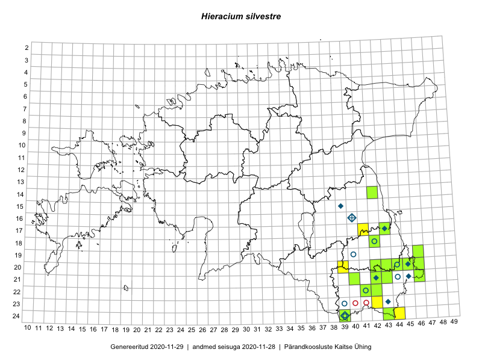

Hieracium silvestre
Uuendatud: 2016-12-07
Kaardile koondatud taksonid: Hieracium silvestre Tausch.

Kaart põhineb 15 vaatlusel. Taime on leitud 13 ruudust.
| Ruut | Vaatleja(d) | Vaatlusaeg | Kirje tüüp | Viide andmebaasikirjele |
|---|---|---|---|---|
| 24-43 | Ott Luuk, Peedu Saar | 2015-08-13 | ruut/ala | vaata PlutoFis |
| 24-43 | Ott Luuk, Peedu Saar | 2015-08-13 | punkt | vaata PlutoFis |
| 18-42 | Toomas Kukk, Kersti Tambets, Timo Luhamäe, Janika Sammasto, Sten Mander | 2014-07-29 | ruut/ala | vaata PlutoFis |
| 18-42 | Toomas Kukk, Kersti Tambets, Janika Sammasto, Timo Luhamäe, Sten Mander | 2014-07-29 | punkt | vaata PlutoFis |
| 05-29 | Thea Kull | 2014-07-14 | ruut/ala | vaata PlutoFis |
| 09-24 | Tõnu Ploompuu, Sirje Lagle | 2015-08-18 | ruut/ala | vaata PlutoFis |
| 22-41 | Toomas Kukk, Tiit Hallikma | 2016-06-16 | ruut/ala | vaata PlutoFis |
| 24-44 | Rein Kalamees, Eerik Leibak | 2016-06-15 | ruut/ala | vaata PlutoFis |
| 20-39 | Rein Kalamees, Eerik Leibak | 2016-06-17 | ruut/ala | vaata PlutoFis |
| 08-39 | Meeli Mesipuu, Liina Oja | 2016-07-29 | ruut/ala | vaata PlutoFis |
| 17-41 | Kersti Püssa, Rein Kalamees | 2016-07-29 | ruut/ala | vaata PlutoFis |
| 07-39 | Meeli Mesipuu, Liina Oja | 2016-07-29 | ruut/ala | vaata PlutoFis |
| 07-37 | Meeli Mesipuu, Tiit Hallikma | 2016-07-27 | ruut/ala | vaata PlutoFis |
| 06-37 | Meeli Mesipuu, Tiit Hallikma | 2016-07-27 | ruut/ala | vaata PlutoFis |
| 03-36 | Meeli Mesipuu, Liina Oja | 2016-07-26 | ruut/ala | vaata PlutoFis |